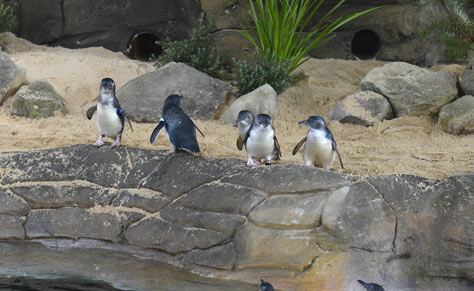
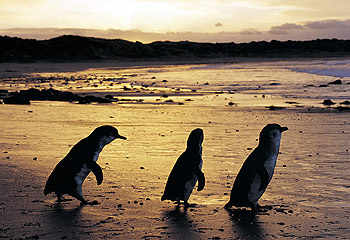
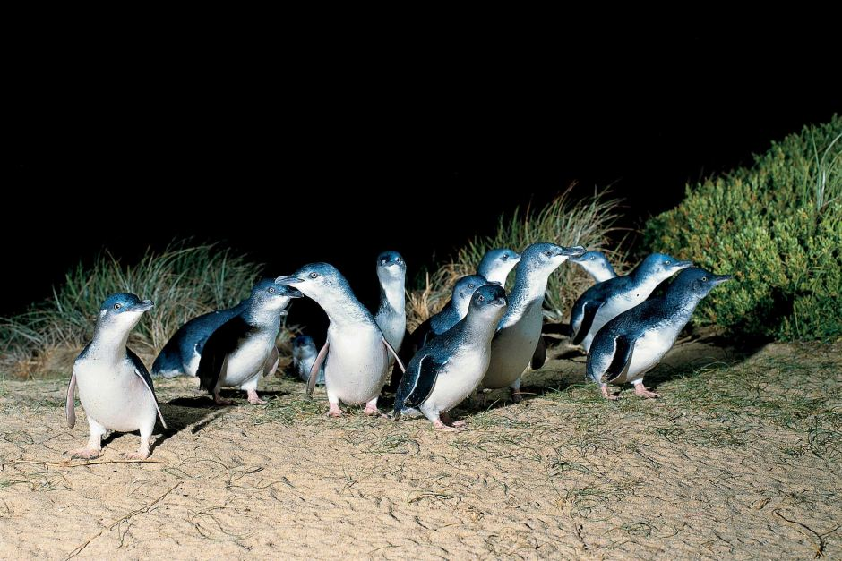

Life as a Little Penguin
Little penguins (Eudyptula minor) are the smallest of all penguin species. They stand approximately 33cm tall and weigh around one kilogram, with males weighing slightly more than females.
Little penguins spend 80% of their lives at sea swimming and foraging for food, and return to their nesting burrows to breed, raise chicks, moult and to take a break after days or weeks spent at sea.
Little penguins breed in colonies along the southern coastlines of Australia and New Zealand. It is believed the penguins have been in the Manly area for hundreds of years, with good fishing options in the harbour and a rocky foreshore which is excellent for nesting burrows.
They often return to their birthing place to breed and are considered socially monogamous. However, little penguins do not mate for life. If breeding success is low, penguins may look for a new mate.
Little penguins lay two eggs, which are in similar size to chicken eggs. Both parents take it in turns to incubate them. The incubation period is approximately 35 days. Both parents feed their chicks by regurgitating fish and squid caught at sea.
Chicks leave their parents and head out to sea for the first time at around 7 - 11 weeks of age. Their parents do not teach them to swim or fish, they know how to do this instinctively.
Penguins have many adaptations for a life at sea, including (use image):
- Modified wings called flippers to 'fly' through the water
- A gland to spread an oil like substance over their feathers when preening to help keep them waterproof
- A streamlined shape
- Waterproof feathers (outer layer)
- A layer of down next to their skin to trap air and keep them warm
- A salt gland above their eyes to filter salt from seawater, providing penguins with freshwater.
Why are Little Penguins So Important?
Sydneysiders are lucky enough to have a population of little penguins living right on their doorstep. This population of little penguins is the only breeding colony on the NSW mainland.
Threats to Survival
Human impacts such as introduced predators, over exploitation of marine ecosystems, oil spills, marine pollution and climate change can threaten little penguins and their ecosystems. The more we know about little penguins, the more we can do to protect them.
Habitat
On land little penguins live in holes in the ground known as burrows. These burrows provide a place for little penguins to rest, nest and moult. Burrows also provide protection from predators and extreme heat.
Depending on the season, a little penguin may spend between one day and one month at sea. When little penguins are breeding they will regularly return to incubate the eggs and feed their chicks. During winter little penguins spend more time at sea chasing fish and only return to rest and renovate their burrows.
How you can protect Little Penguins
All year round:
- Keep Sydney Harbour clean
Put your rubbish in the bin as discarded waste can suffocate and injure little penguins. Fishing lines and hooks on the foreshore or in the water can strangle them or injure their feet and flippers. Be a good citizen and pick up other rubbish too!.
Report any pollution to the Environment Line on 132 555 (24 hours, 7 days).
- Keep pets away from critical habitat
Dogs, cats and foxes are still a big threat to little penguins and are excluded from the little penguins' critical habitat. Owners need to keep pets indoors or in secure backyards at night.
Fines apply for owners if domestic pets are found within the critical habitat area.
- No vegetation removal or building works without approval in Critical Habitat B
For more information, visit the critical habitat page for Manly little penguins.
- Report anyone harming the penguins
It is an offence to harm little penguins, their habitat or critical habitat. Report anyone undertaking illegal activities or causing harm to a little penguin including hunting, shooting, poisoning, netting, snaring, spearing, pursuing, capturing or trapping them. Contact the Environment Line on 131 555.
Phone Manly Council on (02) 9976 1500 or the National Parks and Wildlife Duty Officer on (02) 9457 9577 to report any dogs, cats or foxes in critical habitat areas or anyone disturbing little penguins and their nests.
During breeding season (May to February):
- Minimise noise and light on the foreshore or on the water as they can delay penguins from returning to their burrows. The presence of people or light near burrows at night can make penguins abandon their nests altogether.
- Don’t use flash photography or shine torches at penguins or around their burrows.
- Be careful when boating. Boat strikes are a major cause of injury and death for little penguins.
- Visit the critical habitat page for more information on laws to help protect little penguins in their critical habitat.
Manly Volunteer Penguin Wardens 999 Manly Beach Rd. Manly NSW 2095 | manlyvolunteerpenguinwardens.ORG.AU | 13 TCO (13 45 67)
Gifts over $2 to the social work of Manly Volunteer Penguin Wardens in Australia are tax deductible. Details ABNs: 46 789 012 345 (NSW)
Copyright © 2018 Manly Volunteer Penguin Wardens All rights reserved. Privacy Policy ♦ Terms of condition ♦ Developer detail ♦ Links ♦ more...